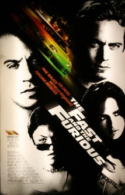

10. A Conquista da Honra (2006) As coisas começam a ficar sérias na carreira de Paul Walker, e este filme representa seu trabalho sob o comando do melhor diretor de toda a sua carreira, Clint Eastwood. Essa investigação histórica sobre supostos heróis da Segunda Guerra Mundial foi eclipsada na época de seu lançamento pelo outro filme de Eastwood sobre o mesmo tema – Cartas de Iwo Jima (2006), que chegou a ser indicado ao Oscar de Melhor Filme – mas é um longa sério e muito competente, em que Walker aparece ao lado de outros jovens talentos, como Ryan Phillippe, Jesse Bradford, Adam Beach, Barry Pepper e Jamie Bell.
9. A Vida em Preto e Branco (1998) Após apenas quatro filmes para o cinema e diversas participações em seriados televisivos, Paul Walker marca presença – ainda num papel pequeno, no entanto – neste que é o seu filme melhor avaliado pela crítica (86% de aprovação). A trama, sobre dois adolescentes do final do século XX – interpretado por Reese Whiterspoon e Tobey Maguire – que se veem transportados para um seriado dos anos 1950 recebeu três indicações ao Oscar e mostrou pela primeira vez Walker em um personagem dono de um conteúdo dramático capaz de ser explorado. O bom visual do rapaz também chamou atenção, lhe garantindo melhores convites no futuro.
8. Anjo de Vidro (2004) Esse filme merece estar na lista por mostrar uma faceta completamente diferente de Paul Walker. Trata-se de um drama romântico ambientado na noite de Natal, dirigido pelo ator Chazz Palminteri e coestrelado pelos vencedores do Oscar Susan Sarandon, Alan Arkin e Penelope Cruz. Na trama, o personagem de Walker é deixado pela noiva (Cruz) na véspera do casamento, ao mesmo tempo em que é perseguido por um bartender (Arkin) que possui um importante segredo sobre seu passado. Sensível e delicado, é um filme que merece encontrar seu público.
7. Velozes e Furiosos 5 (2011) Ambientado no Rio de Janeiro – mas com a maior parte das suas cenas tendo sido filmadas na Costa Rica – o quinto episódio da saga é também o melhor avaliado pela crítica (77% de aprovação) e foi o primeiro a ultrapassar a barreira dos US$ 200 milhões nas bilheterias norte-americanas. Walker interpreta pela quarta vez (ele não aparece no terceiro episódio) o ex-policial Brian O’Conner, que muda de lado ao se apaixonar por Mia Toretto (Jordana Brewster), irmã do bandido Dom Toretto (Vin Diesel).
6. Contagem Regressiva (2013) Este thriller lançado diretamente em DVD no Brasil e inédito nos EUA é baseado em uma história real e mostra Walker como um homem desesperado que precisa lutar contra as forças da natureza para manter sua filha viva no meio da tragédia do furacão Katrina. Escrito e dirigido por Eric Heisserer (roteirista dos remakes A Hora do Pesadelo, 2010, e O Enigma de Outro Mundo, 2011), exagera um pouco no melodrama, mas surpreende pela atuação do protagonista, que convence como pai de família.

5. Velozes e Furiosos (2001) Paul Walker tinha feito apenas pequenos papéis como coadjuvante quando foi convidado para ser protagonista – nesse filme, Vin Diesel era somente o vilão – desta aventura que daria origem ao maior sucesso de toda a sua carreira, uma franquia com já seis episódios – e um sétimo em produção! Ele aparece como um policial do FBI que precisa trabalhar disfarçado para investigar bandidos e traficantes apaixonados por carros velozes e muita adrenalina. A série acabou se consagrando pelas cenas alucinante, mas muito do fenômeno que se tornou se deve também ao talento deste novo astro ainda em formação.

4. Velozes e Furiosos 6 (2013) O sexto filme da franquia é também o longa de maior sucesso de toda a carreira de Paul Walker – com exceção do sétimo, que foi lançado após a morte do ator. Foram US$ 238 milhões arrecadados nos EUA e um total de US$ 788 milhões em todo o mundo, comprovando o potencial do astro como chamariz de bilheteria. É preciso perceber, no entanto, que cada vez mais ele assumia um papel de coadjuvante na história, com Vin Diesel e Dwayne Johnson se posicionando como os verdadeiros protagonistas. No entanto, este é talvez o melhor capítulo de toda a série, e Walker possui ótimos momentos no volante em cenas realmente eletrizantes.
3. Mergulho Radical (2005) Paul Walker e Jessica Alba formaram um dos casais mais sexys do cinema em 2005 neste thriller repleto de cenas estonteantes, corpos seminus e muita ação. Os dois aparecem como mergulhadores profissionais que são procurados por traficantes de drogas quando uma carga de contrabando desaparece em alto mar. Alba chegou a ser indicada às Framboesas de Ouro como Pior Atriz, mas Walker saiu ileso da produção, nesta típica aventura de Sessão da Tarde.
2. Resgate Abaixo de Zero (2006) Essa típica produção da Disney baseada em uma história real mostra os esforços de um treinador de cães para voltar à Antártica e salvar seus cães exploradores, abandonados à própria sorte nas imediações de uma terrível tempestade polar. Uma emocionante história de sobrevivência, amizade e aventura capaz de levar qualquer um às lágrimas, foi abraçada pela crítica (72% de aprovação) e pelo público (mais de US$ 120 milhões arrecadados nas bilheterias de todo o mundo, cerca de três vezes o seu custo), comprovando de vez o talento de Paul Walker como protagonista.
1. + Velozes + Furiosos (2003) Segundo episódio da franquia, esse merece destaque por contar com Walker como protagonista absoluto, após a saída de Vin Diesel da série (ele só retornaria no quarto episódio). Novamente como o policial Brian O’Conner, ele irá se unir a um amigo de infância para desvendar um esquema de tráfico de drogas em Miami, ao mesmo tempo em que se envolve em cenas pra lá de quentes com Eva Mendes. O sucesso desta sequência, que faturou mais de US$ 230 milhões em todo o mundo, garantiu a sobrevivência da série